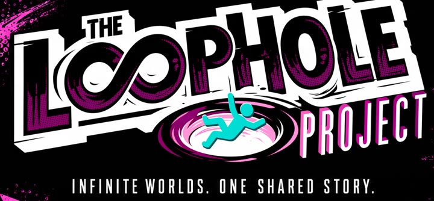
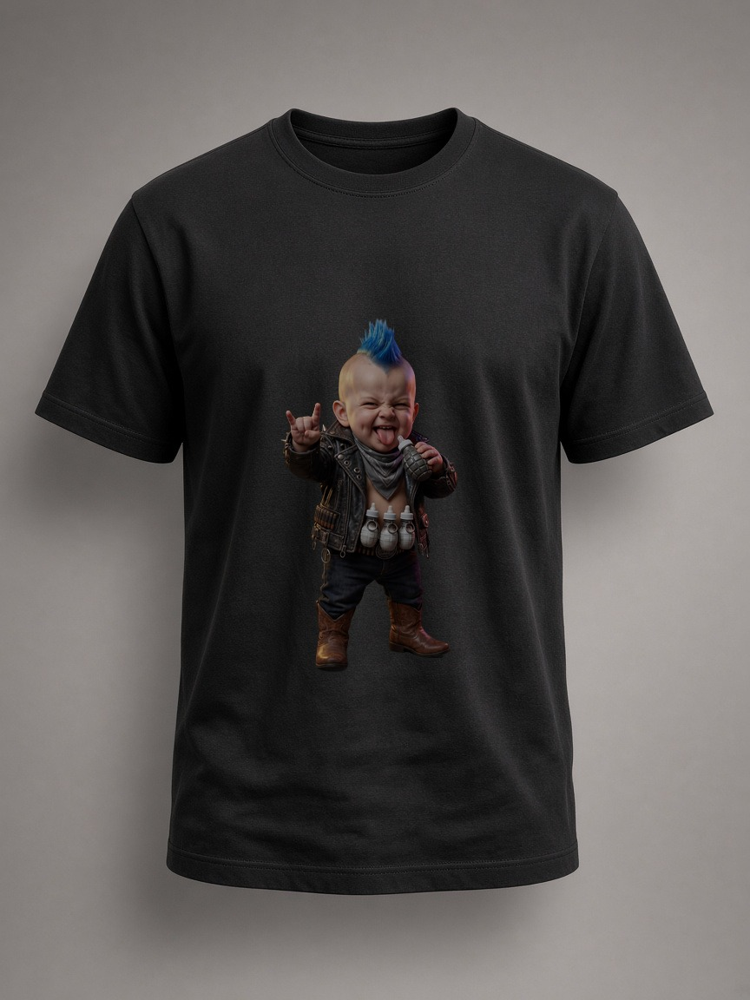
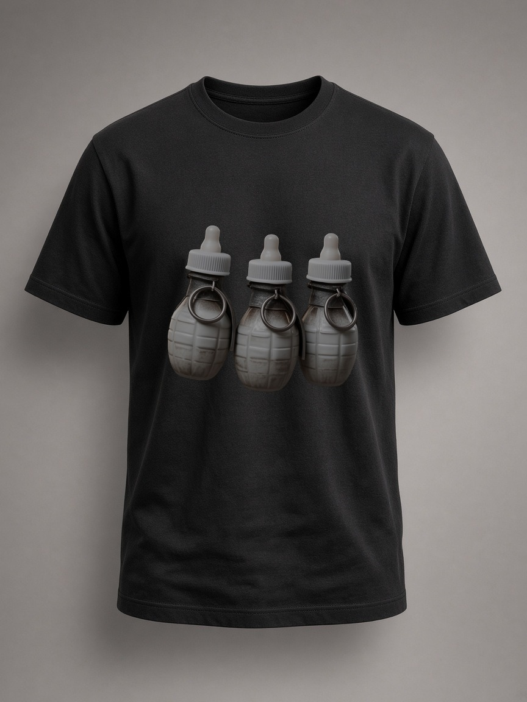
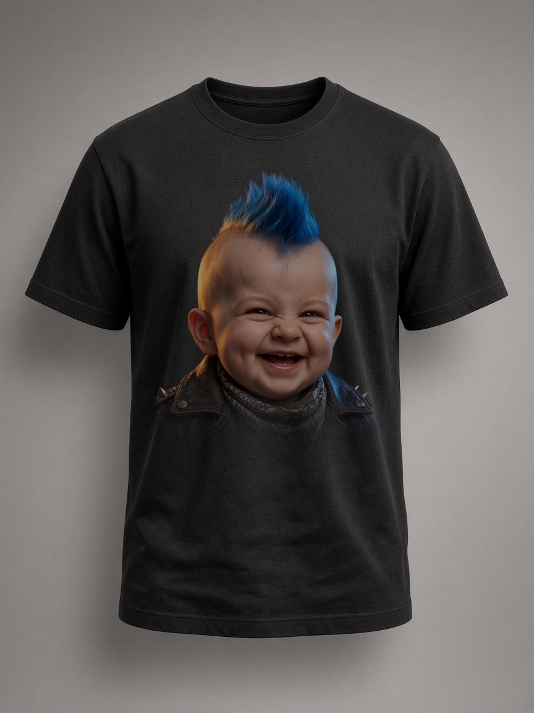

A 20-second AI film
The Monster and the Baby Punk
A four-metre monster falls from the sky. The threat is a baby. He wears a blue mohawk, a studded leather jacket and a belt of bottle-grenades.
Shot by shot FR
Sets off the bottle-grenades and plays the baby’s shout, taken from the film.

A participating film · The LoopHole ProjectAny resemblance to babies living or dead, or to actual monsters, is purely coincidental.
The bottle-grenade is the accessory Alexandre invented (your cursor is one). Click the ones that fall. Or anywhere: it splatters.
08 the shop
The shop
If you’re a fan of this baby, don’t hesitate. Leave your details: as soon as the shop is online, I’ll let you know.


